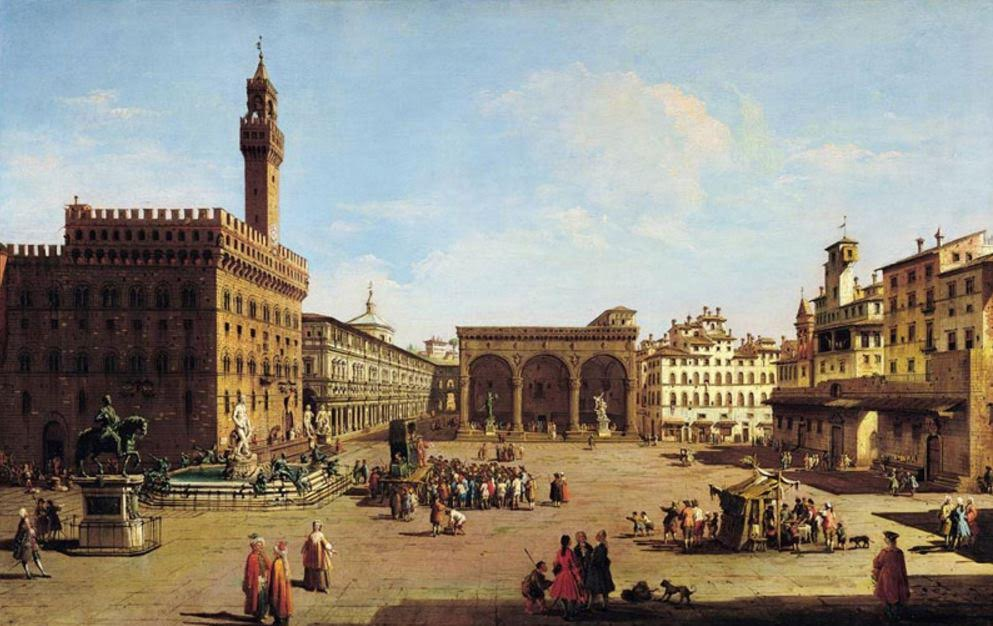
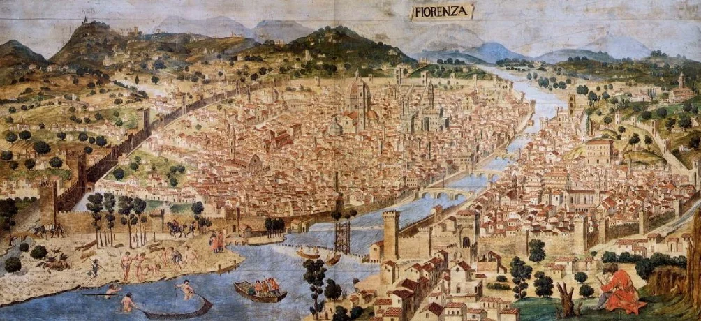
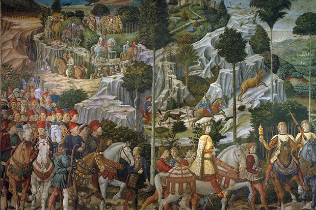
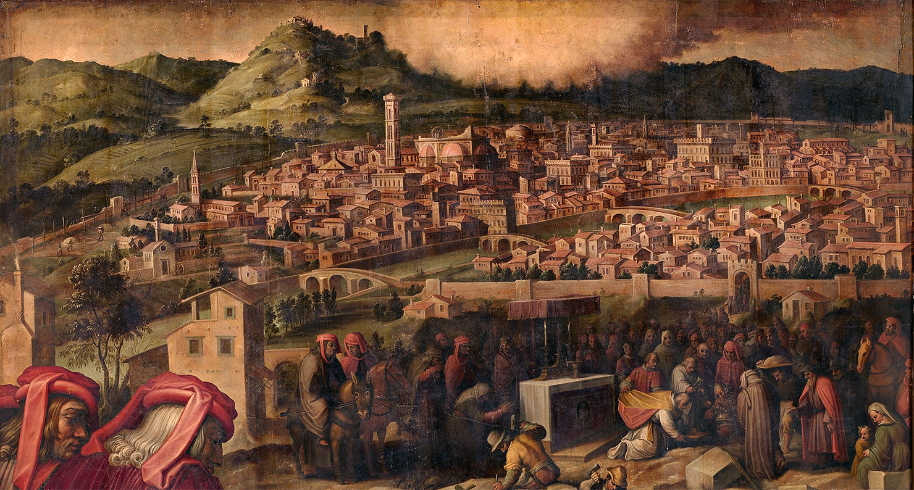
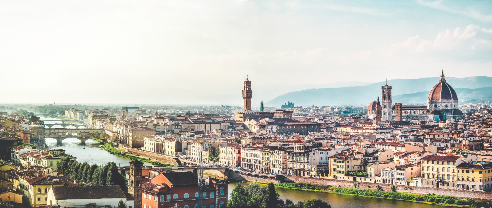

Roman Founding
Florence was founded in 59 BC by Julius Caesar as a settlement for his veteran soldiers. The city quickly grew thanks to its strategic location on the Arno River, which connected inland routes to maritime trade. Over the following centuries the settlement developed market areas and early civic institutions that laid the groundwork for later urban growth.

Medieval Growth
During the Middle Ages, Florence developed into a powerful city-state. Its economy expanded through trade, textiles, and banking, while guilds regulated crafts and commerce. The city built walls, churches, and public buildings in stone, and rival families and communes shaped a dynamic political life that fostered civic pride and competition.

The Rise of the Medici
The Medici family rose from bankers to de facto rulers, using wealth and patronage to influence politics and culture. They commissioned architects and artists, funded public works, and established institutions that transformed Florence into a center of learning and artistic production. Their patronage supported workshops and academies that trained generations of Renaissance masters.

Renaissance Flourish
Florence became the cradle of the Renaissance, spawning new ideas in art, science, and humanism. Architects and artists like Brunelleschi, Donatello, Michelangelo, and Botticelli created works that redefined form and perspective. Wealthy patrons, workshops, and scholarly circles turned the city into a laboratory for innovation and cultural exchange.

Modernization
From the 18th century onward, Florence gradually modernized its infrastructure, introducing new roads, bridges, and public services. In the 19th century it briefly served as the capital of a unified Italy, which brought civic projects and railway connections. Urban planning efforts adapted historic quarters to modern needs while sparking debates about conservation and change.

Contemporary Florence
Today Florence is both a living city and a major tourist destination, balancing modern life with careful conservation of its past. Its economy draws on tourism, education, and creative industries, while local initiatives work to protect cultural sites and support community life. Contemporary Florence continues to host festivals, exhibitions, and research that connect its traditions with global conversations.